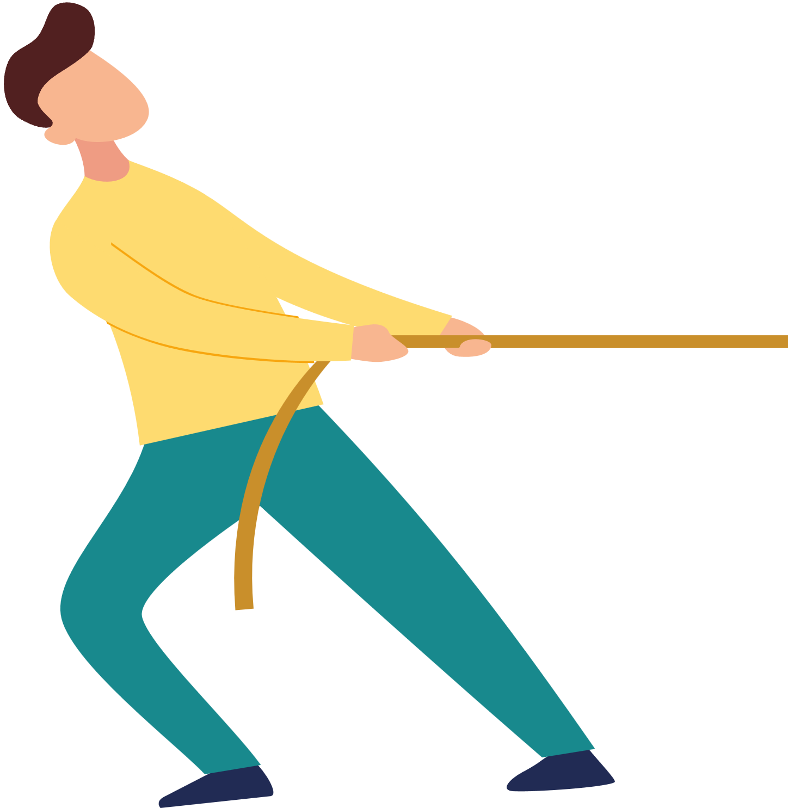
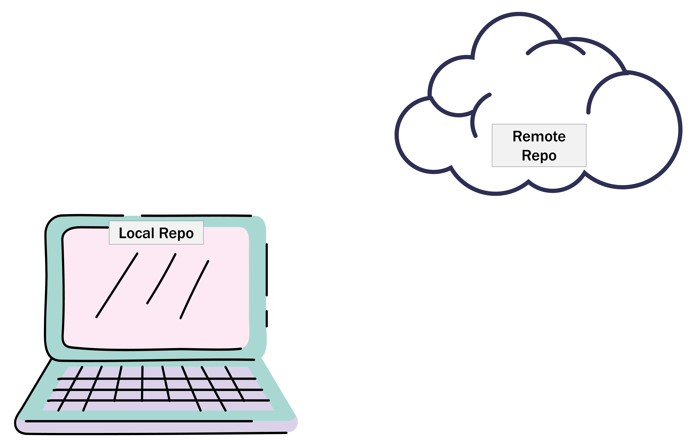
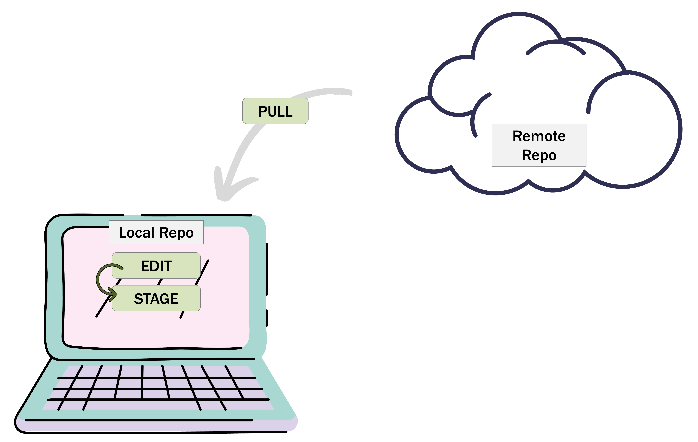
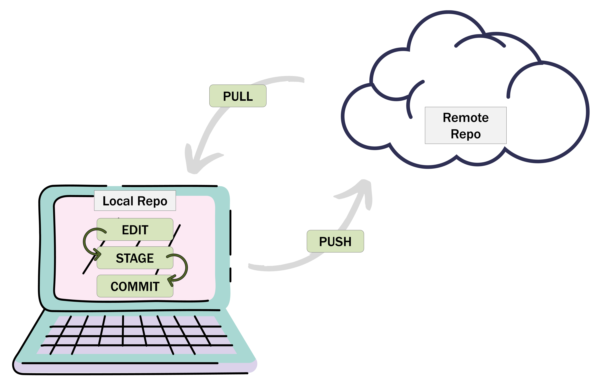
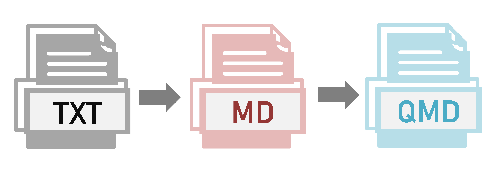
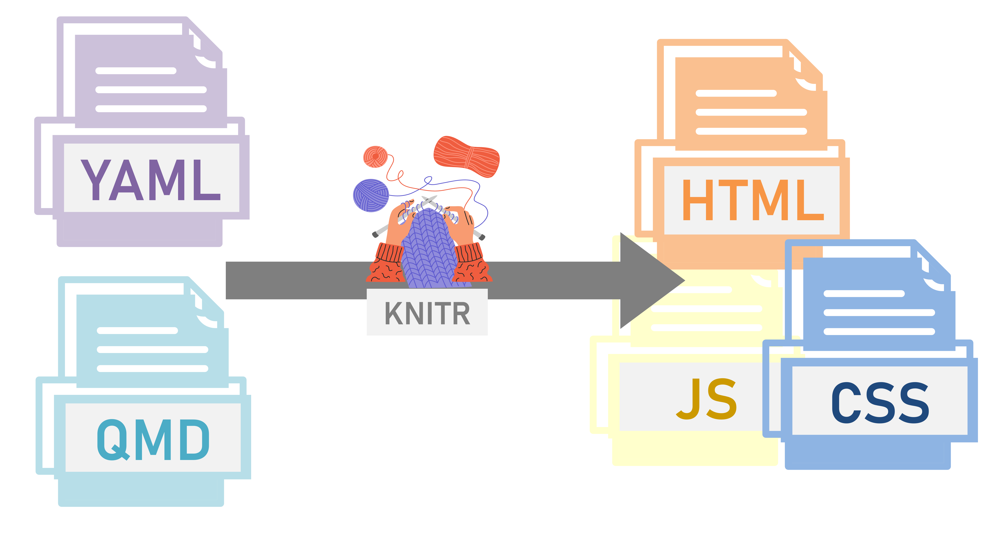

Git, GitHub, Quarto
Plan of action
1st session: Git and GitHub
Quick comfort break
2nd session: Quarto & GitHub Pages
Git and GitHub
Objectives:
- What is Git and GitHub?
- Why use Git and GitHub?
- How to use Git and GitHub?

Has anyone heard of Git or GitHub? Has anyone used Git or GitHub?
What is Git?

What is Git?


Version control
Track changes
Why should you care about Git?


Reproducible practice
Reduces accidental mistakes
Collaboration
How does Git Work?
Watches for changes
Change are tracked
Evaluate changes
Git Repository
- Also referred to as a “Repo”
- A back up version of your directory
- Cloud based
- Any changes made locally need to be added to the remote repo
Git Repository

.git file!
Jargon
Pulls down the current version of the repository from the remote (cloud) repository to the local repository

Jargon
Confirm that you’re happy with the changes made and commit them

Jargon
Push your changes from your local repo to the remote repo

Workflow overview






What is GitHub?


User-friendly
Social & admin
Popular & free
How can you use Git or GitHub?

Git command line
GitHub web
GitHub Desktop
GitHub README.md
- Should be descriptive
- Allows anyone to be able to understand your project
- Some suggestions:
- Repo title
- Motivation for the project
- Intended used
- Limitations & challenges

Demo
GitHub Website
Creating your first GitHub repo
Making and committing changes

Demo
GitHub Website
Creating your first GitHub repo
Making and committing changes
GitHub Desktop
Cloning a repo to your local computer
Pulling and pushing changes from your local computer
Quarto and GitHub Pages
Objectives:
- Learn basic Quarto features
- Create a static Quarto webpage to present your CV
- Learn how to publish a webpage using GitHub pages
Markdown Language
# Quackston CV
My name is Quackston.
I *like* debugging stats code.
## Skills
- Debugging expertise
## Experience
[Hyperlink](https://c7091.github.io/website/)Heading 1
Normal text
Italics
Heading 2
Bullet point
Heading 2
Hyperlinked text Markdown to Quarto

What is Quarto?
Newer version
More powerful
Easier to use

Rendering



Live demo plan!
- Create your webpage using R and R studio
- Make your github repository for you webpage
- Make your repository a github page
Important!
Turning your Quarto project into a GitHub repo
- Creating a local repo
- Publishing your local repo using GitHub desktop
- Pull, edit, push, repeat
Creating your GitHub Page


Repository Settings
Privacy
Build and deploy